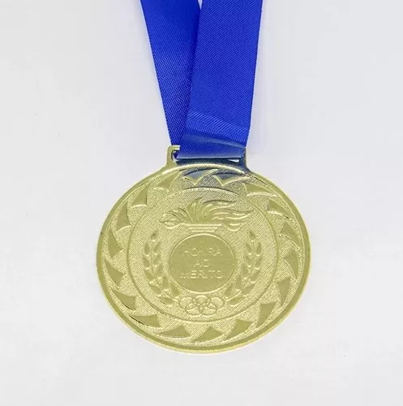

En esta sección podrán ver cuales son algunas de mis metas como estudiante y como persona.
Aspiraciones académicas
Una de mis aspiraciones más importantes es lograr conseguir las medallas de oro en los siguientes dos proyectos de bachillerato (plata y oro).

En grado 11 me gustaría ser fórmula de alguno de los candidatos a personería. Siento que tengo buenas ideas y gracias a que soy una persona organizada y cumplida, podría servir de apoyo para el/la personer@.
Mi tercera meta académica es lograr conseguir una beca para estudiar en Estados Unidos, Canadá o Lodnres. Esta podría ser para mi carrera o para una maestría.
Metas personales
Mi principal aspiración personal es aprender a tocar el piano sin necesidad de asistir a clases. Desde siempre ha sido un instrumento que me ha llamado mucho la atención y se que hay personas que han podido aprender sin clases entonces me anima a intentarlo a mí también.
Contacto: julizambrano204@gmail.com